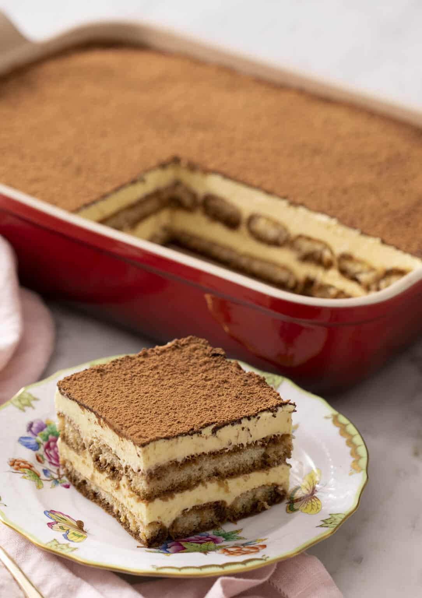

Tiramisu

Description
Tiramisu is the perfect summer dessert. The creamy mascarpone custard, delicate ladyfingers, and delicious coffee aroma are an amazing combination.
Ingredients
- Egg yolks
- Sugar
- Heavy cream, cold
- Mascarpone cheese
- Vanilla
- Espresso
- Ladyfingers
- Bailey's
- Cocoa powder
Steps
- Brew the hot coffee and mix with the Bailey's, or a liqueur of your choice.
- Make the filling. Place egg yolks and sugar in a bowl and set over pot with simmering water. Whisk constantly until sugar is dissolved and custart thickens. Remove from heat and set aside.
- Add the mascarpone and vanilla and whisk until smooth.
- In a separate bowl, whip the cold heavy cream to stiff peaks. Fold 1/3 of the whipped cream into the mascarpone mixture. Then fold in the remaining whipped cream. Set aside.
- Assemble the tiramisu. Dip each ladyfinger into the coffee mixture for 1-2 seconds and place in the bottom of a dish. Spread half of the mascarpone mixture over the ladyfingers. Repeat with another layer of ladyfingers and mascarpone mixture.
- Refridgerate the tiramisu for at least 6 hours or overnight.
- Just before serving, dust with cocoa powder.